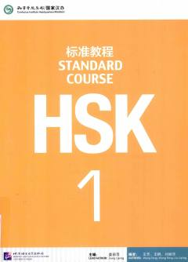

H1Xitoy tilini o'rganuvchilar uchun HSK 1 darajasidagi rasmiy tayyorgarlik darsligi.
Ushbu darslik xitoy tilini o'rganuvchilar uchun HSK xalqaro imtihoniga tayyorgarlik ko'rish maqsadida ishlab chiqilgan. Kitob o'quvchilarga xitoy tilida muloqot qilish ko'nikmalarini rivojlantirish va imtihon talablariga mos ravishda bilimlarini tizimlashtirishga yordam beradi.